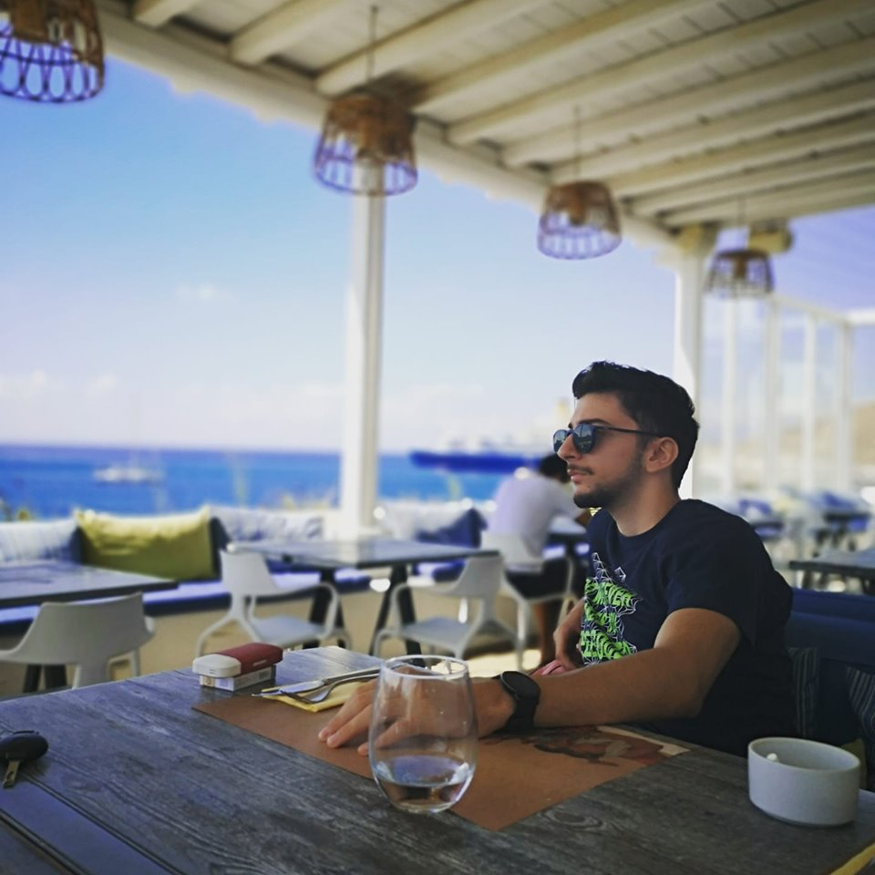

Grande appassionato di informatica, specialmente in
Front-End developing.
Mi posso definire Junior Developer autodidatta. La mia forza maggiore è la volontà di imaparare nuovi linguaggi di programmazione, migliorare e ingrandire le conoscienze che già possiedo.
Riesco sempre ad addattarmi a nuovi ambienti di lavoro e creare legami forti con i miei colleghi
Ho un'ottima conoscieza della lingua inglese e dei linguaggi: